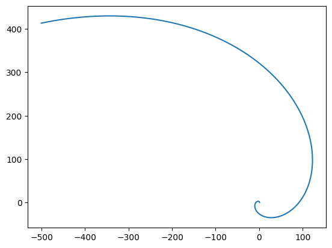
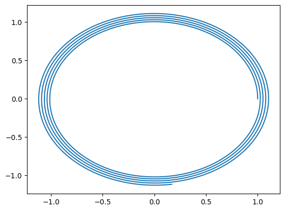

W26 (2026) — English translation
Newton's second law: $$m\dot{\vec v} = -\varepsilon m\vec v + m\vec g.$$Разобьём velocity on two term: $$\vec v(t) = \vec u(t) + \frac{\vec g}{\varepsilon}.$$Equation on $\vec u$: $$\dot{\vec u} = -\varepsilon \vec u.$$$$\vec v(t) = \frac{\vec g}{\varepsilon}+\left(\vec v_0-\frac{\vec g}{\varepsilon}\right) e^{-\varepsilon t}$$
Let us write the law of change in the energy of the particle+medium system: $$m\left(\vec v, \dot{\vec v}\right) = m\left(\vec v, \vec g\right) - P.$$$$P = -m\left(\vec v, \dot{\vec v}-\vec g\right) = \varepsilon m v^2$$$$\vec v(t) = \frac{\vec g}{\varepsilon}\left(1-e^{-\varepsilon t}\right)+\vec v_0 e^{-\varepsilon t}$$$$v^2 = \frac{g^2\left(1-e^{-\varepsilon t}\right)^2}{\varepsilon^2} + v_0^2 e^{-2\varepsilon t}+\frac{2 \left(\vec v_0, \vec g\right)}{\varepsilon}\left(1-e^{-\varepsilon t}\right) e^{-\varepsilon t}$$
During time $t\gg 1/\varepsilon$, motion is established, and from the isotropy of the system it is clear that motion will occur in a circle with an angular velocity $\omega$ and a constant modulus velocity $u$. In this case, the angle between speed and force is constant and equal to $\alpha$. Let's write down Newton's second law in projection onto the direction of velocity and the normal to it. $$\begin{cases}0 = F_0 \cos\alpha - \varepsilon m u\\ mu\omega = F_0 \sin \alpha \end{cases}$$$$\tan \alpha = \frac{\omega}{\varepsilon}$$$$u = \frac{F_0\cos\alpha}{\varepsilon m} = \frac{F_0}{\varepsilon m} \frac{\varepsilon}{\sqrt{\varepsilon^2+\omega^2}} = \frac{F_0}{m\sqrt{\varepsilon^2+\omega^2}}$$Law change energy for system: $$P = F_0 u \cos\alpha = \frac{F_0^2\varepsilon}{m\left(\varepsilon^2+\omega^2\right)}.$$
Projection of Newton's second law in projection onto the $z$ axis: $$m\ddot{z} = -mg - \varepsilon m\dot z.$$$$\ddot{z} = -g - \varepsilon \dot z$$We solve similarly to the previous part of the problem.
Newton's second law: $$m\ddot{\vec r} = m\vec g + \varepsilon m\left(\left[\vec\omega, \vec r\right] - \dot{\vec r}\right).$$in projection on axis $x$ and $y$:
First method
Note that it is enough to consider one of the solutions, since the other is obtained by rotating the system relative to the $z$ axis, therefore, from symmetry, the dependence coefficients will not change. Let's substitute the first solution option into the answer from the previous paragraph. $$\left( \begin{array}{c} x \\ y \end{array} \right) = Ae^{at} \left( \begin{array}{c} \cos\left(\Omega t\right) \\ \sin\left(\Omega t\right) \end{array} \right)$$$$\left( \begin{array}{c} \dot x \\ \dot y \end{array} \right) = Ae^{at} \left( \begin{array}{c} a\cos\left(\Omega t\right) - \Omega\sin\left(\Omega t\right)\\ a\sin\left(\Omega t\right) + \Omega\cos\left(\Omega t\right) \end{array} \right)$$$$\left( \begin{array}{c} \ddot x \\ \ddot y \end{array} \right) = Ae^{at} \left( \begin{array}{c} \left(a^2-\Omega^2\right)\cos\left(\Omega t\right) - 2a\Omega\sin\left(\Omega t\right)\\ \left(a^2-\Omega^2\right)\sin\left(\Omega t\right) + 2a\Omega\cos\left(\Omega t\right) \end{array} \right)$$Substitute in answer прошлого part: $$\left( \begin{array}{c} \left(a^2-\Omega^2\right)\cos\left(\Omega t\right) - 2a\Omega\sin\left(\Omega t\right)\\ \left(a^2-\Omega^2\right)\sin\left(\Omega t\right) + 2a\Omega\cos\left(\Omega t\right) \end{array} \right) = \left( \begin{array}{c} -\varepsilon\omega\sin\left(\Omega t\right) \\ \varepsilon\omega\cos\left(\Omega t\right) \end{array} \right) - \left( \begin{array}{c} a\varepsilon\cos\left(\Omega t\right) - \varepsilon\Omega\sin\left(\Omega t\right)\\ a\varepsilon \sin\left(\Omega t\right) + \varepsilon\Omega\cos\left(\Omega t\right) \end{array} \right)$$Equate coefficient before sine and cosine obtain system equation on $a$ and $\Omega$: $$\begin{cases} a^2-\Omega^2 = - a\varepsilon\\ 2a\Omega = \varepsilon \omega - \varepsilon \Omega \end{cases}$$
Second method
Let us consider plane motion in polar coordinates $(r,\varphi)$. $$\dot{\vec r} = \dot r \vec e_r + \dot \varphi r \vec e_\varphi$$$$\ddot {\vec r} = \left(\ddot r - \dot{\varphi}^2r\right)\vec e_r + \left(\ddot \varphi r + 2\dot r \dot \varphi\right) \vec e_\varphi$$Write Newton's second law in projection on $\vec e_r$ and $\vec e_\varphi$: $$\begin{cases} \ddot r - \dot{\varphi}^2r = -\varepsilon \dot r\\ \ddot \varphi r + 2\dot r \dot \varphi = \varepsilon\left(\omega r - \dot\varphi r\right) \end{cases}$$Substitute $r = Ae^{at}$ and $\varphi = \Omega t$: $$\begin{cases} a^2 - \Omega^2 = -\varepsilon a\\ 2a\Omega = \varepsilon\omega - \varepsilon\Omega \end{cases}$$We obtained a similar system of equations the first method.
To solve, we transform the equations: $$\begin{cases} \Omega^2 = \left(a+\frac{\varepsilon}{2}\right)^2 - \frac{\varepsilon^2}{4}\\ \Omega = \frac{\varepsilon\omega}{2\left(a+\frac{\varepsilon}{2}\right)} \end{cases}$$Denote $\gamma = \left(a+\frac{\varepsilon}{2}\right)^2$. $$\frac{\varepsilon^2\omega^2}{4\gamma} = \Omega^2=\gamma-\frac{\varepsilon^2}{4}$$$$\gamma^2-\frac{\varepsilon^2}{4}\gamma=\frac{\varepsilon^2\omega^2}{4} = \left(\gamma - \frac{\varepsilon^2}{8}\right)^2 - \frac{\varepsilon^4}{64}$$$$\gamma = \frac{\varepsilon^2}{8} \pm \sqrt{\frac{\varepsilon^2\omega^2}{4}+\frac{\varepsilon^4}{64}}$$Note, that $\gamma>0$, therefore подходит only root with sign $+$. $$a+\frac{\varepsilon}{2} = \pm \sqrt{\frac{\varepsilon^2}{8} + \sqrt{\frac{\varepsilon^2\omega^2}{4}+\frac{\varepsilon^4}{64}}}$$$$a = \varepsilon\left(-\frac{1}{2}\pm\sqrt{\frac{1}{8} + \sqrt{\frac{\omega^2}{4\varepsilon^2}+\frac{1}{64}}}\right)$$$$\Omega = \pm\frac{\omega}{\sqrt{\frac{1}{2} + \sqrt{\frac{4\omega^2}{\varepsilon^2}+\frac{1}{4}}}}$$
Initial conditions: $x(0) = 0$, $y(0) = r_0$, $\dot x(0) = 0$ and $\dot y(0) = 0$. $$\begin{cases} A+B = r_0\\ C+D = 0\\ a_1A+a_2B-\Omega_1C-\Omega_2D=0\\ a_1C+a_2D+\Omega_1A+\Omega_2B=0 \end{cases}$$$$D = -C$$$$\begin{cases} A+B = r_0\\ a_1A+a_2B=C\left(\Omega_1-\Omega_2\right)\\ \Omega_1A+\Omega_2B=C\left(a_2-a_1\right) \end{cases}$$$$\frac{a_1A+a_2B}{\Omega_1A+\Omega_2B}=\frac{\Omega_1-\Omega_2}{a_2-a_1}$$$$A\left(a_1\left(a_2-a_1\right)+\Omega_1\left(\Omega_2-\Omega_1\right)\right)=B\left(a_2\left(a_1-a_2\right)+\Omega_2\left(\Omega_1-\Omega_2\right)\right)$$$$r_0 = A\frac{a_2\left(a_1-a_2\right)+\Omega_2\left(\Omega_1-\Omega_2\right)+a_1\left(a_2-a_1\right)+\Omega_1\left(\Omega_2-\Omega_1\right)}{a_2\left(a_1-a_2\right)+\Omega_2\left(\Omega_1-\Omega_2\right)}$$$$r_0 = A\frac{\left(a_2-a_1\right)^2+\left(\Omega_2-\Omega_1\right)^2}{a_2\left(a_2-a_1\right)+\Omega_2\left(\Omega_2-\Omega_1\right)}$$$$A = r_0 \frac{a_2\left(a_2-a_1\right)+\Omega_2\left(\Omega_2-\Omega_1\right)}{\left(a_2-a_1\right)^2+\left(\Omega_2-\Omega_1\right)^2}$$$$B = -r_0 \frac{a_1\left(a_2-a_1\right)+\Omega_1\left(\Omega_2-\Omega_1\right)}{\left(a_2-a_1\right)^2+\left(\Omega_2-\Omega_1\right)^2}$$$$C = \frac{a_1A+a_2B}{\Omega_1-\Omega_2}=r_0\frac{a_2\Omega_1-a_1\Omega_2}{\left(a_2-a_1\right)^2+\left(\Omega_2-\Omega_1\right)^2}$$$$D = r_0\frac{a_1\Omega_2-a_2\Omega_1}{\left(a_2-a_1\right)^2+\left(\Omega_2-\Omega_1\right)^2}$$
For $\varepsilon \ll \omega$ we get: $$x(t) = r_0\cos\Omega_2 t \cosh \Omega_2 t$$$$y(t) = r_0\sin \Omega_2 t \sinh \Omega_2 t$$For пренебрежении затухающей exponent be obtained логарифмическая спираль. Angle between radius-vector and velocity through larger time after beginning/origin motion equal $45^\circ$.
At $\varepsilon \gg \omega$ the particle moves along a circle of radius $r_0$ with a slowly increasing radius: $$x(t) \approx r_0 \cos \omega t$$$$y(t) \approx r_0 \sin \omega t$$


Let us write down the law of change in the energy of the system: $$m\left(\vec v, \dot{\vec v}\right) = m\left(\vec g,\vec v\right) - P + W,$$where $W$ - power external force, act on среду. Find $W$. So that среда rotate in constant angular velocity, on each её section must act force with zero projection on direction velocity, therefore on region, in which be located particle, act force $-\vec F$ with side particle and external force $\vec F$. $$W = \left(\vec F, \left[\vec\omega, \vec r\right]\right)$$$$\left(\vec v, m\vec g + \vec F\right) = m\left(\vec g,\vec v\right) - P + \left(\vec F, \left[\vec\omega, \vec r\right]\right)$$$$P = \left(\vec F, \left[\vec\omega, \vec r\right]-\vec v\right) = \varepsilon m v_\text{rel}^2 = \varepsilon m \left(v_z^2+\left(v_x+\omega y\right)^2+\left(v_y-\omega x\right)^2\right)$$